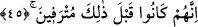
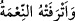
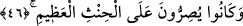

Bu âyet-i kerîmede “soldakiler” ile alay edilmekte ve onların, amel defterleri
sağlarından verilenlerin cennette sâhip olacakları serin gölge ve hoşluklara hiçbir
zaman sâhip olamayacakları haber verilmektedir.
45. Çünkü onlar bundan önce varlık içinde sefâhete dalmışlardı.
Bu âyet-i kerîmede onların maruz kalacakları azâbın sebebi bildirilmektedir. Burada
geçen __WORD__ (mütraf) kelimesi “feriha” babındaki __WORD__ (terife) kökünden gelmektedir.
Terife, nimetlendi, nimete kavuştu demektir. __WORD__ (etrafethu’n-ni’metü) tâbiri
“nimet onu şımarttı, azdırdı” mânâsına gelmektedir. __WORD__ (etrafe fülân) ise “filan
azgınlık ve tecavüzde ısrar etti” demektir. Kamus’ta da belirtildiği gibi mükrem
sîgasında bir kelime olan mütref, çeşitli nimetlere nâil kılınıp istediğini yapmak üzere
terk edilmiş ve hiç bir şeyden men edilmeyen kimse demektir. Yâni onlar, bahsedilen bu
berbâd azaba uğramadan önce dünyada türlü türlü yiyecek, içecek, çok güzel meskenler,
değerli makamlar gibi nimetlerle nimetlenmiş oldukları halde, şehvetlere dalmış
olduklarından bu nimetlerin tam tersiyle azâb edilmek suretiyle cezâlandırılmaları
kaçınılmaz olmuştur.
46. Büyük günahı işlemekte direnir dururlardı.
“Büyük günahı” yâni şirk günahını “işlemekte direnir dururlardı.” Araplar çocuğun
işlediği günah sebebiyle sorumlu tutulacağı ergenlik çağına ulaşmasını ifâde etmek
üzere __WORD__ derler. Yine bu kelime, yemine bağlı kalmanın zıddı olan “yemini
bozmak” anlamına da gelir. Bazılarına göre bu ayette hins kelimesi “yalan”
mânâsınadır. Çünkü onlar, şirk günahıyla beraber, Allah Teâlâ’nın ölüleri
diriltemeyeceğine yemin ederlerdi.
Fakir (Bursevî) der ki: Kanâatime gore, bir sonraki “Sonra siz ey sapıklar,
yalancılar!” (el-Vâkıa 56/51) âyet-i kerîmesi bu mânâyı göstermektedir.
Kitapları sağlarından verilenler hakkında “Onlar bundan önce şükr edenler idi”
buyrulup sevap kazanmalarının sebebi bildirilmediği halde, o inkârcıların azablarının
sebebinin bildirilmesinin hikmeti şudur: Verilen sevap Allah’ın kereminden olup hiçbir
şükredenin şükrü ve hiçbir itâat edenin itâati ile kazanılmaz. Allah Teâlâ’nın verdiği
azâb ise O’nun adâletinin bir gereğidir. Diğer açıdan, şayet azâbın sebebi bilinmeyecek
olursa bir haksızlık olduğu zan edilebilir.